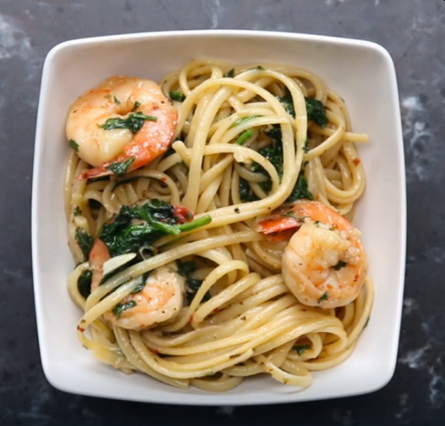

Shrimp Pasta

Description
This easy 30-minute pasta recipe transforms ingredients that you already have in your kitchen into a posh,
seafood dish you’ll want to serve at your next dinner party. And since the whole dish is made in a single pot,
clean-up is easy. Don’t be surprised if this becomes your favorite quick go-to. Recipe from Tasty
Ingredients
- 8 oz linguine (225 g)
- tablespoons olive oil
- 8 tablespoons unsalted butter, 1 stick
- 4 cloves garlic, minced
- 1 teaspoon red pepper flakes
- 1 ¼ lb large shrimp (570 g)
- salt, to taste
- pepper, to taste
- 1 teaspoon dried oregano
- 4 cups baby spinach (160 g)
- ¼ cup parmesan cheese (25 g), grated
- 2 tablespoons fresh parsley, chopped
- tablespoon lemon juice
Preparation
- In a large pot, boil water and add pasta. Cook (stirring frequently) until al dente.
- Drain and set pasta aside.
- In the same pan, heat olive oil and 2 tablespoons of butter. Add garlic and crushed red pepper, cook until fragrant.
- Toss in shrimp, salt and pepper to taste, and stir until shrimp start to turn pink, but are not fully cooked.
- Add oregano and spinach, cook until wilted.
- Return cooked pasta to the pot, add remaining butter, parmesan, and parsley. Stir until well mixed and the butter is melted.
- When the shrimp are cooked, add lemon juice, mix once more, then serve while hot.
- Enjoy!